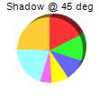
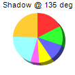
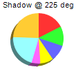
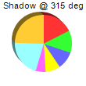

This example demonstrates an alternative 3D drawing method that uses shadows.
The standard way to draw a pie chart in 3D is to view the chart from an inclined angle. Using this method, the surface of a 3D pie will become an ellipse.
ChartDirector supports an alternative way to draw a pie chart in 3D - to draw the 3D portion like a shadow. The 3D pie will remain perfectly circular, and the sector areas will correctly reflect its percentages.
The 3D drawing method is configured using
PieChart.set3D.
The following is the command line version of the code in "cppdemo/shadowpie". The MFC version of the code is in "mfcdemo/mfcdemo". The Qt Widgets version of the code is in "qtdemo/qtdemo". The QML/Qt Quick version of the code is in "qmldemo/qmldemo".
#include "chartdir.h"
#include <stdio.h>
void createChart(int chartIndex, const char *filename)
{
char buffer[1024];
// the tilt angle of the pie
int angle = chartIndex * 90 + 45;
// The data for the pie chart
double data[] = {25, 18, 15, 12, 8, 30, 35};
const int data_size = (int)(sizeof(data)/sizeof(*data));
// Create a PieChart object of size 110 x 110 pixels
PieChart* c = new PieChart(110, 110);
// Set the center of the pie at (50, 55) and the radius to 36 pixels
c->setPieSize(55, 55, 36);
// Set the depth, tilt angle and 3D mode of the 3D pie (-1 means auto depth, "true" means the 3D
// effect is in shadow mode)
c->set3D(-1, angle, true);
// Add a title showing the shadow angle
sprintf(buffer, "Shadow @ %d deg", angle);
c->addTitle(buffer, "Arial", 8);
// Set the pie data
c->setData(DoubleArray(data, data_size));
// Disable the sector labels by setting the color to Transparent
c->setLabelStyle("", 8, Chart::Transparent);
// Output the chart
c->makeChart(filename);
//free up resources
delete c;
}
int main(int argc, char *argv[])
{
createChart(0, "shadowpie0.png");
createChart(1, "shadowpie1.png");
createChart(2, "shadowpie2.png");
createChart(3, "shadowpie3.png");
return 0;
}
© 2023 Advanced Software Engineering Limited. All rights reserved.